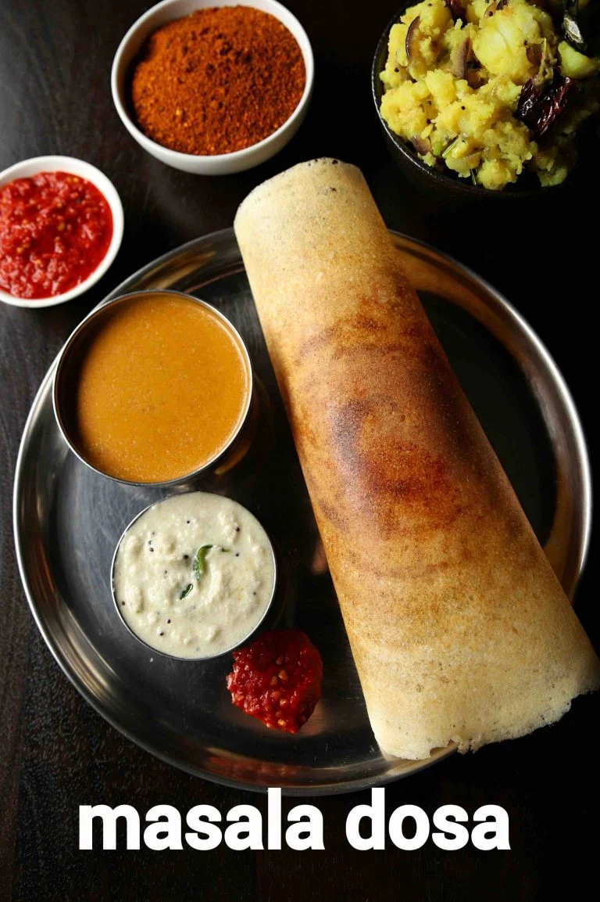

Masala Dosa

Discription:
Masala Dosa is an easy and popular, tasty south indian staple breakfast recipe made with rice and urad dal. basically an extension to the traditional dosa recipe, where dosa is made crisp and stuffed with potato masala. it is perhaps one of the famous dishes from south india, which is can be served for morning breakfast or also as an evening snack with coconut chutney and sambar.
Ingredients:
For Batter:
- 3 cup sona masuri rice
- ½ tsp methi / fenugreek seeds
- water, for soaking
- 1 cup urad dal
- 2 tbsp toor dal
- 2 tbsp chana dal
- 1 cup poha / avalakki, rinsed
For Aloo bhaji:
- 2 tbsp oil
- 1 tsp mustard
- 1 tsp urad dal
- 1 tsp chana dal
- 1 dried red chilli
- few curry leaves
- pinch hing / asafoetida
- 2 chilli, finely chopped
- 1 inch ginger, finely chopped
- 1 onion, sliced
- ¼ tsp turmeric
- 1 tsp salt
- 3 potato, boiled & mashed
- 2 tbsp coriander, finely chopped
Steps:
Masala dosa batter preparation:
- Firstly, in a large bowl take 3 cup sona masuri rice and ½ tsp methi.
- Rinse well and soak in enough water for 2 hours.
- After soaking dal for 2 hours, drain off the water and transfer to the grinder. you can also grind in mixi if you do not have access to a grinder.
- Mix well making sure everything is well combined.
- Ferment in a warm place for at least 8 hours or until the batter doubles in volume. if you are living in a cold climate, then you can place the batter in the warm oven (just heat the oven until it turns slightly warm and then turn off) to ferment
- Transfer 4 cups of fermented batter to a small bowl and add 1 tsp salt. mix well until the salt is well combined. masala dosa batter is ready. keep aside.
Aloo bhaji preparation:
- Firstly, in a large kadai heat 2 tbsp oil and splutter 1 tsp mustard, 1 tsp urad dal, 1 tsp chana dal, 1 dried red chilli, few curry leaves, pinch hing.
- Now add 2 chilli and 1 inch ginger. saute well.also, add 1 onion and saute until onions shrink slightly.
- Further, add ¼ tsp turmeric and 1 tsp salt. saute well.
- Now add 3 potato and mix well, mash slightly making sure everything is well combined.
- Turn off the flame and add 2 tbsp coriander and 2 tbsp lemon juice.
- Mix well and aloo bhaji for masala dosa is ready. keep aside
Masala dosa preparation:
- Firstly, add a ladleful of batter on hot tawa and spread as thin as possible making a crispy dosa.
- Take 1 tsp of butter and spread uniformly.
- Also, place 2 tbsp of prepared aloo masala in the centre.
- Roast until the dosa turns golden brown and crisp.
- Scrape the sides of dosa and roll the dosa.
- Finally, masala dosa recipe is ready to serve with coconut chutney and sambar.